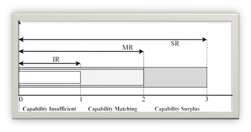

Education
University of Pittsburgh | Information Science MS
GPA:4.0
University at Buffalo | Computer Science BS with Minor in Mathematics
GPA: 3.6
Skills
Languages: C/C++, Python, JavaScript, Scala, CSS, R, Java
Technologies/ Environment: Docker, MySQL, MongoDB, Navicats
Framework: Pandas, Numpy, Scipy, Scikit-Learn, TF, Flask, MXNet, Cuda,Vue.js, Boostraps
Internship & Work
Big Data analyst, Information System Detp.
The First Affiliated Hospital of Nanchang University June 2023 – August 2023• Familiar with HIS EMR LIS PACS CDR mainstream manufacturers and their database business, completed the record of clinical medical data;
• Cooperated with study sponsor, clinical experts and statisticians, the clinical trial protocol and execution plan were designed according to the requirements, and the CRF form and execution data management plan were designed;
• Analyzed and processed the medical data, summarized and analyzed the desensitized information, and built the medical big data scientific research platform and special disease database.
Algorithm Engineering Architect, Medical Big Data Dept.
Deepwise AI Medical Technology Co..LTD January 2021 - June 2022 • Participated in the design and research and development of deep learning inference platform, including inference infrastructure, service framework, feature engineering, performance optimization.• In-depth cooperation with algorithm researchers to complete the application of model algorithm in the medical field.
About
linkedin homepage:
Visit Qingxiang Zeng.com!Github Project:
TCP Websocket ServerQuizHub
UBTalking
Contact
Phone Number: 774-432-4733
Email: qiz167@pitt.edu
Contact
Phone Number: 774-432-4733
Email: qiz167@pitt.edu
Intelligent Domestic Environments for Diverse Age Groups
1. Problem Identification
In the realm of scientific and technological progress, intelligent domestic environments are increasingly prevalent. However, a critical issue is their lack of age-specific functionality, especially affecting the elderly who struggle with smart home systems due to declining cognitive and sensory abilities. This problem is exacerbated in environments where system demands exceed elderly users' capabilities. Similarly, children using these systems often face challenges that could hinder their development. It's essential to develop intelligent environments tailored to the unique needs of both older adults and children, focusing on safety, assistance, and convenience to enhance their well-being and development.
2. Literature Review
2.1 For the Senior Age Group
The adoption of intelligent domestic environments hinges on user-centric factors, notably age and technology experience. There's a marked gap between the expected and actual market adoption of intelligent furniture for seniors, largely due to complex interfaces that overwhelm elderly users, leading to frustration and disengagement. Recognizing this, the industry is shifting towards intuitive, behavior-centric design, facilitated by advances in sensor and wireless technologies. This shift aims to create environments that align with seniors' behavioral patterns and sensory needs, enhancing their independence and interaction with their surroundings. The focus is on making smart homes more accessible and beneficial for the elderly.
2.2 For the Pre-school Age Group
Early childhood literature emphasizes the importance of parental involvement in cognitive and social development, but notes a decline due to digital distractions. This leads to behavioral issues in children, as parents often overlook underlying causes. Intelligent domestic systems designed for preschoolers' needs can remedy this by fostering educational parent-child interactions and nurturing learning environments. These systems are crucial in enhancing early development and strengthening family education, particularly in senior and children-focused smart furniture design.
4. Design Implications and Outcomes
Intelligent domestic systems tailored to pre-schoolers can significantly enhance early childhood development by fostering a learning-rich environment and improving the parent-child relationship through educational engagement. These systems address the educational engagement gap and support a stimulating home atmosphere, thereby reinforcing the foundation of family education. Focusing on the unique needs of both seniors and children, smart furniture systems are vital, particularly since a significant part of their routines happens at home. User capability is a crucial factor in designing these systems, ensuring they serve and adapt to the varying needs effectively.
1) SR (Sufficient Range) Capacity
In the SR capacity range, user proficiency exceeds the functional demands of the product, ensuring ease of use and clarity. While this simplicity is beneficial for user comprehension and reduces development costs, it may also inadvertently result in user disengagement due to the monotony of the experience. Products that fall within this range risk being relegated to mere utilities rather than engaging, enriching elements of daily life.
2) MR (Matching Range) Ability
The MR represents a balance between the user's operational capabilities and the product's functionalities, situated between the minimal S values and optimal M values. This equilibrium fosters an engaging and motivating user experience, encouraging exploration and sustained interaction. Products within this range typically offer advanced features that enhance daily living, representing an ideal focus for research and development. This alignment maximizes user satisfaction and amplifies the perceived value of the product.
3) IR (Insufficient Range) Capacity
Conversely, the IR capacity range denotes a discordance where the user's abilities are substantially lower than the product's functionalities, leading to user frustration and a diminished experience. The disparity can result in negative emotional responses and a reluctance to use the product, necessitating a reevaluation of the product’s complexity relative to the user’s capabilities.
To address user recognition, intelligent furniture systems must implement real-time identification and adaptation mechanisms, using a cloud-based application to personalize interactions based on each user's age and abilities. A data-centric approach is needed to align user capabilities with product functionalities, enhancing user experience by ensuring furniture systems are responsive and evolve with the users' needs. This would culminate in a comprehensive cloud-based system that supports both seniors and children in interacting with intelligent furniture.
5. evaluation plan
1. Objective Setting
Define the primary objectives of the evaluation, focusing on user satisfaction, ease of use, adaptability, and impact.
2. Target Audience
Identify primary and secondary users for both elderly and pre-school age groups.
3. Methodology
Use a mixed-methods approach, combining surveys, interviews, focus groups, and usability testing.
4. Data Collection
Collect data focusing on usability for the elderly and engagement and educational outcomes for children.
5. Performance Metrics
Define metrics such as task completion time, error rates, and user satisfaction scores.
6. Timeline
Set a detailed timeline for the entire evaluation process.
7. Data Analysis
Analyze collected data using appropriate statistical and thematic analysis methods.
8. Pilot Testing
Conduct a pilot test to refine evaluation tools and procedures.
9. Ethical Considerations
Ensure informed consent, confidentiality, and data privacy, especially for child participants.
10. Reporting and Feedback
Compile findings in a report, provide recommendations, and present to stakeholders.
11. Continuous Improvement
Use the outcomes for iterative improvements and plan ongoing evaluations.